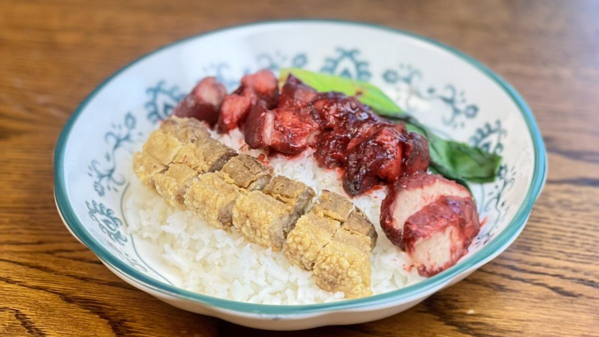

ข้าวหมูแดงสุพรรณบุรี กินที่ไหนดี? รู้จักร้านกิมเง็ก ข้าวหมูแดงเกรดพิธี

ถ้าคุณกำลังหาข้าวหมูแดงสุพรรณบุรีสักจาน บทความนี้รวมสิ่งที่ควรรู้ก่อนมาที่ร้านกิมเง็ก ตั้งแต่วิธีทำ เมนูและราคา ไปจนถึงเวลาที่ควรมาและวิธีเดินทาง
ข้าวหมูแดงสุพรรณบุรี ที่ร้านกิมเง็กต่างจากทั่วไปอย่างไร
หมูแดงของร้านเริ่มจากการหมักหมูด้วยเครื่องเทศตลอดทั้งวัน จากนั้นย่างด้วยไฟอ่อน แล้วรมควันทิ้งไว้ข้ามคืน ก่อนนำมาขายในเช้าวันถัดไป กลิ่นควันจึงซึมเข้าไปถึงกลางชิ้นเนื้อ
อีกเรื่องที่ร้านยึดถือคือ ไม่ใช้สีผสมอาหารเพื่อให้หมูดูแดงขึ้น สีที่เห็นมาจากซอสและควันจริง
ร้านเรียกมาตรฐานนี้ว่า "เกรดพิธี" คือหมูแดงที่ขึ้นจานลูกค้าต้องดีเท่ากับจานที่จัดขึ้นโต๊ะพิธีของครอบครัว
ขั้นตอนของหมูแดงหนึ่งจาน
- หมักหมูด้วยเครื่องเทศชุดเดิมจากรุ่นก่อน
- ย่างด้วยไฟอ่อน ไม่เร่งไฟ
- รมควันข้ามคืนทุกวัน
- เคี่ยวซอสเองทุกวัน
- หั่นสดเมื่อสั่ง และราดซอสตอนเสิร์ฟเท่านั้น
จุดสังเกตเวลาเลือกข้าวหมูแดง
ไม่ว่าจะกินร้านไหน ลองดูสามอย่างในจาน
- เนื้อหมู: สีแดงอมน้ำตาลจากการย่างและซอส ขอบชิ้นมีรอยไหม้อ่อน ๆ เนื้อยังชุ่ม ไม่แห้งเป็นเส้น ถ้าแดงจัดสม่ำเสมอไปถึงกลางชิ้น อาจมาจากสีผสมอาหาร
- ซอส: ข้นพอเคลือบข้าวได้ หวานไม่แหลม มีกลิ่นเครื่องเทศตามหลัง
- ข้าวและของแถม: ข้าวไม่แฉะ และมีน้ำซุปกับน้ำจิ้มให้ทุกจาน
เมนูและราคา
| เมนู | ราคา |
|---|---|
| ข้าวหมูแดง | 60 บาท |
| ข้าวหมูกรอบ | 65 บาท |
| ข้าวหมูแดงไข่ต้ม | 70 บาท |
| ข้าวหมูแดงพิเศษ (หมูแดงเพิ่มเท่าตัว) | 80 บาท |
| ข้าวหมูแดงเกรดพิธี | 80 บาท |
| ข้าวสามอย่าง (หมูแดง หมูกรอบ ไส้กรอก) | 90 บาท |
| หมูแดงชั่งกิโล (ขั้นต่ำครึ่งกิโล) | 280 บาท/กก. |
ทุกจานใช้หมูแดงชุดเดียวกันที่รมควันข้ามคืน ราคาอาจเปลี่ยนตามฤดูกาล สอบถามเมนูพิเศษได้ที่ 085-529-8799
หมูแดงชั่งกิโล ซื้อกลับบ้านหรือฝากคนที่บ้าน
ถ้าอยากซื้อกลับ ร้านมีหมูแดงขายเป็นกิโล ขั้นต่ำครึ่งกิโล แถมซอสแยกถุง เหมาะกับการซื้อไปกินที่บ้านหรือเป็นของฝาก
ที่ตั้งและวิธีไปร้าน
- ที่อยู่: 21/9 ถนนขุนช้าง ต.ท่าพี่เลี้ยง อ.เมืองสุพรรณบุรี จ.สุพรรณบุรี 72000
- เปิด: อังคาร–อาทิตย์ 07:30–14:00 น. (ปิดทุกวันจันทร์)
- โทร/LINE: 085-529-8799
- ที่จอดรถ: มีหน้าร้านริมถนนขุนช้างและข้างร้าน
ควรมาช่วงไหน
ช่วง 11:00–13:00 น. ที่จอดรถจะแน่นที่สุด หมูแดงทำจำนวนจำกัดต่อวัน ช่วงเช้าถึงสายมักมีให้เลือกครบทุกเมนู ส่วนวันหยุดหมูแดงมักหมดก่อนเวลาปิด ถ้าจะมาช่วงสายถึงบ่ายของวันหยุด แนะนำโทรถามก่อน
คำถามที่คนถามบ่อยก่อนมาร้าน
ร้านเปิดกี่โมง อังคาร–อาทิตย์ 07:30–14:00 น. ปิดวันจันทร์
สั่งกลับบ้านได้ไหม ได้ทุกเมนู แยกซอสและน้ำซุปให้ หากสั่งจำนวนมากโทรแจ้งล่วงหน้าอย่างน้อย 1 ชั่วโมงที่ 085-529-8799
จองโต๊ะได้ไหม รับจองสำหรับกลุ่ม 6 คนขึ้นไป โทรหรือทักไลน์ล่วงหน้า 1 วัน
มีที่จอดรถไหม มี หน้าร้านริมถนนขุนช้างและข้างร้าน
สรุป
ถ้าอยากกินข้าวหมูแดงสุพรรณบุรีที่หมักทั้งวัน รมควันข้ามคืน และไม่แต่งสีให้หมูดูแดง ร้านกิมเง็กอยู่บนถนนขุนช้าง เปิดอังคาร–อาทิตย์ โทร 085-529-8799 ดูเมนูและราคาทั้งหมดหรือดูแผนที่ร้านก่อนออกเดินทางได้เลย
ดูเมนูและราคา · แผนที่ & ติดต่อ · โทร 085-529-8799